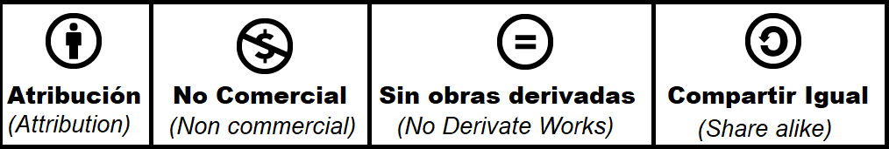
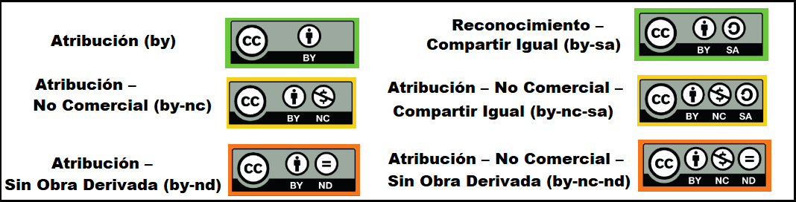

¿Que son las licencias Creative Commons?
Las licencias Creative Commons son herramientas gratuitas legales que permiten a los autores compartir y distribuir sus obras. Contrario a lo que algunas personas piensan, colocar una obra bajo una licencia Creative Commons no significa renunciar al copyright; más bien, es una forma de especificar cómo se puede usar la obra. Además, tenemos la opcion de elegir que nuestra licencia contenga solo una de las siguientes condiciones, o usarlas en conjunto en caso de necesitar una licencia mas restrictiva. Dandonos la posibilidad de optar por la que mejor se adapte a nuestras preferencias.-

- Atribución (Attribution): Requiere que se reconozca la autoría de la obra en cualquier uso autorizado por la licencia. (obligatorio en todos los casos).
- No Comercial (Non commercial): Restringe el uso de la obra a propósitos no comerciales.
- Sin Obras Derivadas (No Derivate Works): Impide la creación de obras derivadas basadas en la original.
- Compartir Igual (Share alike): Las obras derivadas autorizadas deben utilizar la misma licencia al compartirlas.
Licencias Creative Commons principales
Con estas condiciones se pueden generar las seis combinaciones que producen las licencias Creative Commons:
- Atribución (by): Es la licencia más permisiva, ya que permite a otros distribuir, copiar y realizar obras derivadas (la distribución de estas también está permitida sin ninguna restricción) incluso con fines comerciales. Es una licencia libre según la Freedom Defined.
- Reconocimiento – Compartir Igual (by-sa): Permite a otros distribuir, copiar y realizar obras derivadas, incluso con fines comerciales, siempre y cuando la distribución de las obras derivadas se haga bajo la misma licencia que regula la obra original. Esta también es una licencia libre según la Freedom Defined.
- Atribución – No Comercial (by-nc): permite la creación de obras derivadas, pero tanto la obra original como las derivadas no se pueden utilizar con fines comerciales. No es una licencia libre.
- Atribución – No Comercial – Compartir Igual (by-nc-sa):se permite la creación de obras derivadas, sin embargo, no se puede hacer uso comercial de ellas ni de la obra original. La distribución de las mismas se debe hacer con una licencia igual a la que regula la obra original. No es una licencia libre.
- Atribución – Sin Obra Derivada (by-nd): permite la redistribución, comercial y no comercial, siempre que no se realicen cambios en la obra original. No es una licencia libre.
- Atribución – No Comercial – Sin Obra Derivada (by-nc-nd): esta es la licencia más restrictiva, debido a que no se permiten las obras derivadas y tampoco su uso comercial. No es una licencia libre, y es la más cercana al derecho de autor tradicional.